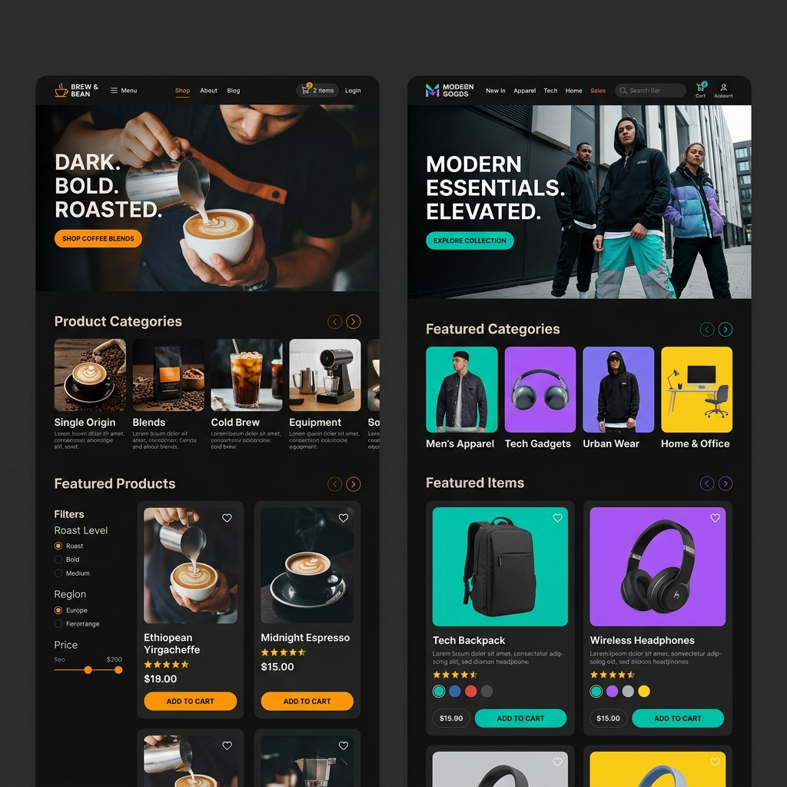

Proyectos Destacados

Sistema de Gestión Académica
Sistema robusto de administración y corrección de notas utilizado por las sucursales de la Universidad UPTP.
Ver Detalles
Gestión de Citas
Plataforma web escalable desarrollada para el control y agendamiento de citas.
Ver Detalles
Soluciones Web Comerciales
Desarrollo Frontend y Backend de sitios modernos e interactivos para cafeterías y tiendas retail.
Ver Detalles